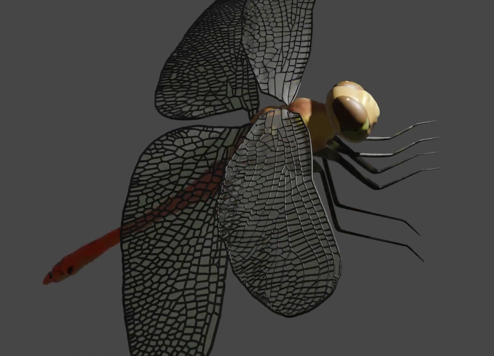
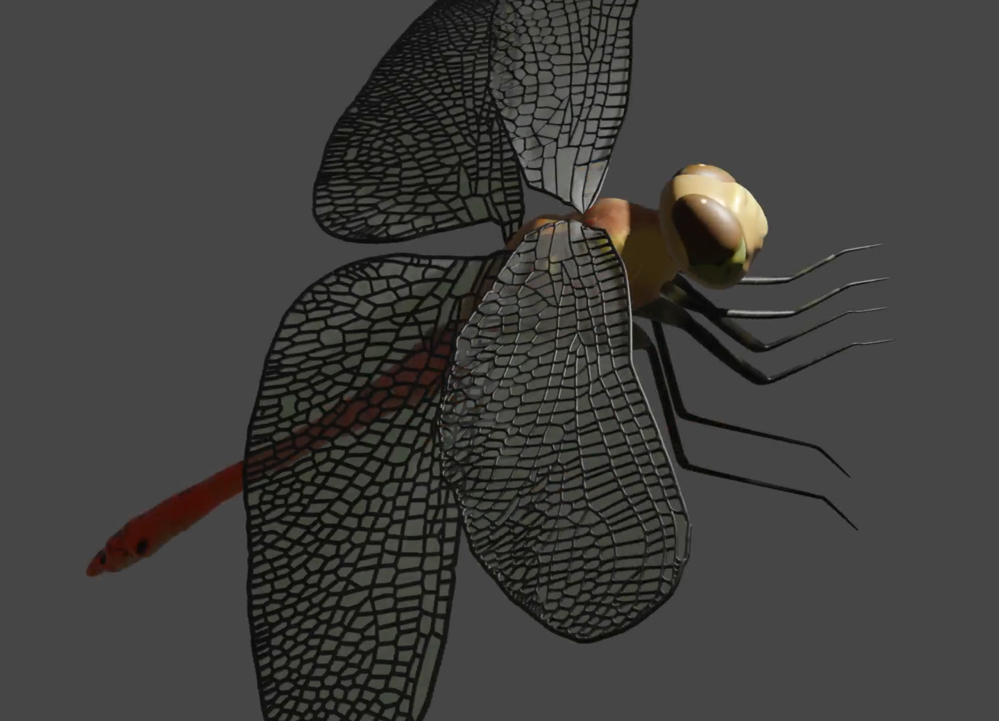

This section is devoted to art and creative projects. Things that I've drawn or digitally created are examples for this category.
FinalUpdate.png)
Final.png) (To zoom in on the posters, click on them)
(To zoom in on the posters, click on them)
This design project has the task of creating an art artifact in connection with
scripture. To create our project concept we worked on a moodboard. I first came across coffee stains
and splashes, until i came across the idea of ink splashes. This quickly turned into ink drawn art.
Because this project had to involve some kind of scripture, I've decided to create an adult
alphabet, it should look mature: the pictures accordingly to a letter should be ink drawn and represent
things that are normally not in a learning alphabet poster for children. Things like beer for the letter
"B" would be suitable for this.
The symbols were drawn with ink on paper, I took a photo of each symbol and removed the background to
create a poster in Adobe Photoshop. I choose a typewriter font to match the ink-style and arranged the symbols
to each letter.
There were multiple possible results of my project, my favorite two I show here on the left and right hand
side. One arrangement I've named "dynamic", because symbols and letters aren't placed in a set order but
instead asymmetrical. The other arrangement is tidy and symmetrical.
To see what pictures are symbolizing which object, there are all objects named at the bottom of a poster.
Ink drawing Adobe Photoshop
 
(To zoom in, click on them)

(To zoom in, click on them)
In a university task we've had the task of creating a 3D model of an insect of our choice. I chose a spotted
darter dragonfly because I liked the red colour of this species.
This task should teach us the use of Blender, so this was my first ever created 3D model. I surely enjoyed
this task, but I quickly run into performance issues probably because I did something wrong in the creation
process. Afterwards when animating this model I came across heavy errors with the rig (I guess). This is in
any case something I'd have to look into again.
3D Modeling Blender
In the context of my first semester of Digital Media B.S. course design basics,
we should create an artsy project with a self-choosen theme.
After a rather long thought process I decided to make an informational video about love. My project
is a video about a purple circle, living in a society of squares. Soon the squares began to hit the
purple circle for no seemingly reason.
It is also a world map shown with certain countries red coloured. These red-coloured countries
represent the contries in which it is illegal to be a person of LGBTQ+ in any kind. Some of them
"only" have time in jail as a concequence, but there are also contries where the death sentence is
also a form of punishment.
So this video should inform about these circumstances.
In this project I mostly worked with procreate to draw the 2D animation, and Adobe AfterFX to put the
whole video together. I needed a bit of time to get used to After FX but other than that I just needed
a greater amount of time for the 2D animation.
Procreate Adobe AfterFX 2D Animation